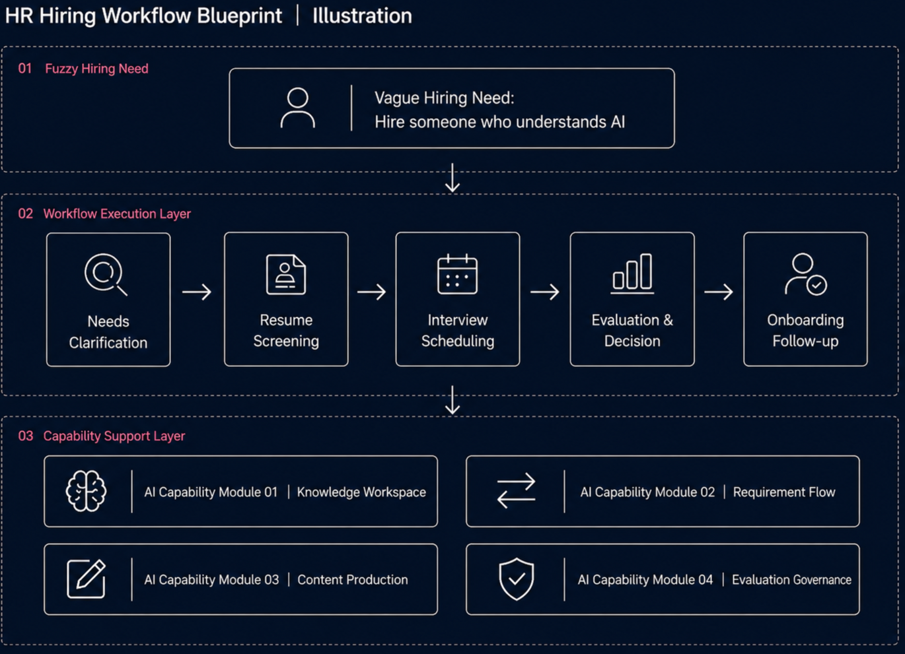

Scenario Entry
AI Integrated Scenario Sample Room
How AI Enters the HR Recruitment Process
Starting from a vague request like “hire someone who understands AI,” this page reassembles the previous four projects into one HR hiring workflow.
Sample room construction:
01Project 1: Load-bearing Context Wall
Trusted Context | Input Layer
JD / level / interview feedback / historical records
→ Information foundation for hiring judgment
02Project 2: Decision Pathway
Business Signal Flow | Process Layer
Need → clarify → screen → interview → decision
→ Decision flow inside recruitment
03Project 3: Decision Assembly Unit
Structured Output | Output Layer
JD / interview questions / candidate package
→ Structured recruitment decision outputs
04Project 4: Judgment Gate
Methodology Base | Control Layer
scenario / boundary / gate
→ AI intervention control rules in recruitment
